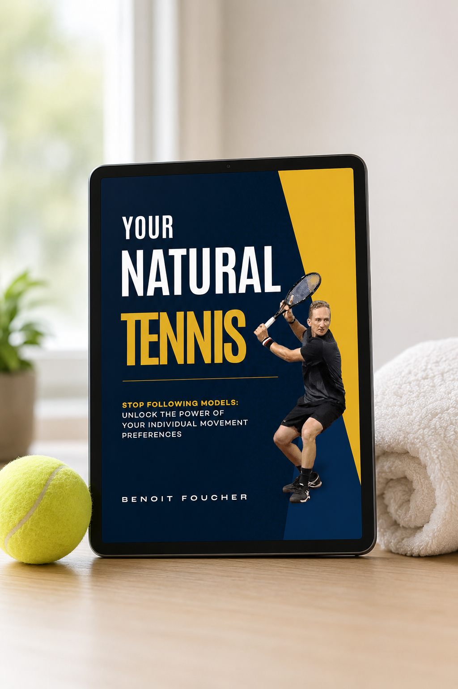
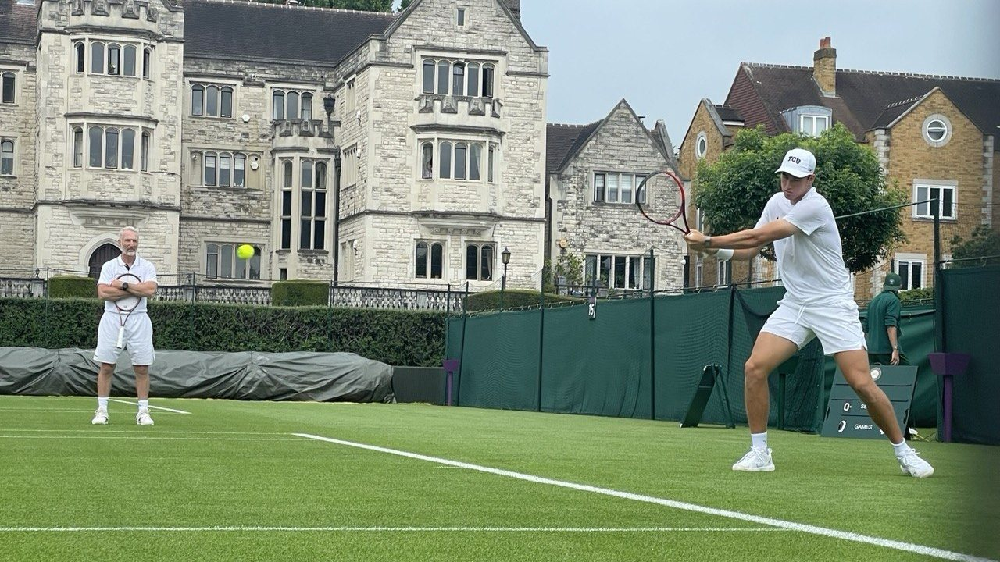

Free Ebook
Discover why textbook technique keeps you stuck on the same plateau, and the simple shift that lets committed amateurs finally play with natural, effortless power. Enter your details and I'll send it straight to your inbox.

Sound familiar?
On the practice court your game looks the part. Your forehand is clean, your timing is there, and for a few games it even holds in a match. Then the score gets close, your arm tightens, your feet go quiet, and the ball you've hit ten thousand times sails long.
You've spent years trying to copy the perfect Federer forehand or the Djokovic backhand, and somehow your movements still feel forced, mechanical, inconsistent. You lose to players you'd beat nine times out of ten in practice, and you replay the points the whole drive home.
So you do what you've always done. More lessons. More hours. Another pro's technique copied off YouTube. For a week it feels different. Then you're back on the same plateau, and underneath sits the question you don't say out loud: maybe this is just my level.
There's another way
Most players plateau not because they lack talent, but because they are trapped in a one-size-fits-all model. The truth is that your body already has a signature. The secret to elite performance isn't copying a pro, it's discovering your own motor preferences: the way your individual nervous system is wired to move.
When you understand that, everything changes. You stop fighting your biology and start playing with natural, effortless power. Your technique stops feeling borrowed and starts feeling like yours, the kind that holds up when the pressure is real.
That is what Your Natural Tennis is about. It is the foundation of how I coach every player, written down and made simple for committed amateurs who are done copying and ready to play their own game.

The game has to fit the player. Never the other way round.
Grass-court season, on tour.

Who's behind it
I'm Benoit Foucher. I have spent my life around high-performance tennis, as a player and as a coach, and this approach is what I've learned actually works.
What you'll take away
What players say
"Benoit is a supercoach, period."
"Deep tennis knowledge, and personalized guidance rather than rigid rules. His intuitive, adaptive approach improved my technique, balance, and overall game."
"I win, but at no point am I thinking about winning. I'm focused on what to do next. The result is just a consequence of the right attitude."

Your free gift
The complete approach, written for amateurs. It costs you nothing but your email.
Why now
It's tournament season, and the players who change how they train now are the ones who feel it this summer. The ebook is free today. The real cost isn't money, it's another season spent playing a game that was never built for you.
No risk. It's free, it's yours to keep. No payment, no catch.
Get your copy
Enter your name and email below and Your Natural Tennis lands in your inbox in the next few minutes.
Before you go
Same lessons. Same hours. The same matches where it slips away, the same losses to players you know you're better than, and the same quiet voice telling you maybe this is your ceiling. Nothing changes on its own.
You already have the level. The work is learning to play the game your body was built for. It starts with one free ebook, and one email.
P.S. Your Natural Tennis is free, and it's the exact foundation I build every player on. Enter your email above and I'll send it to you now.